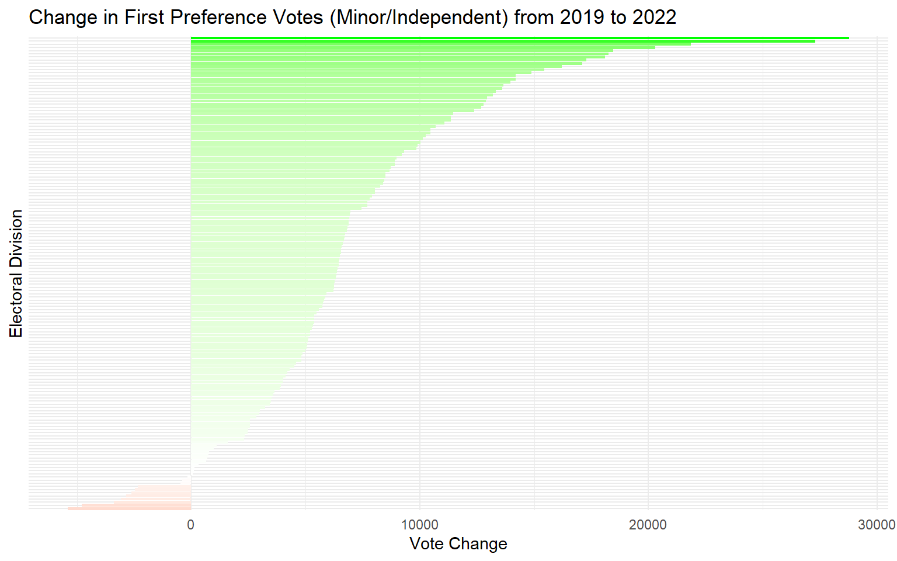
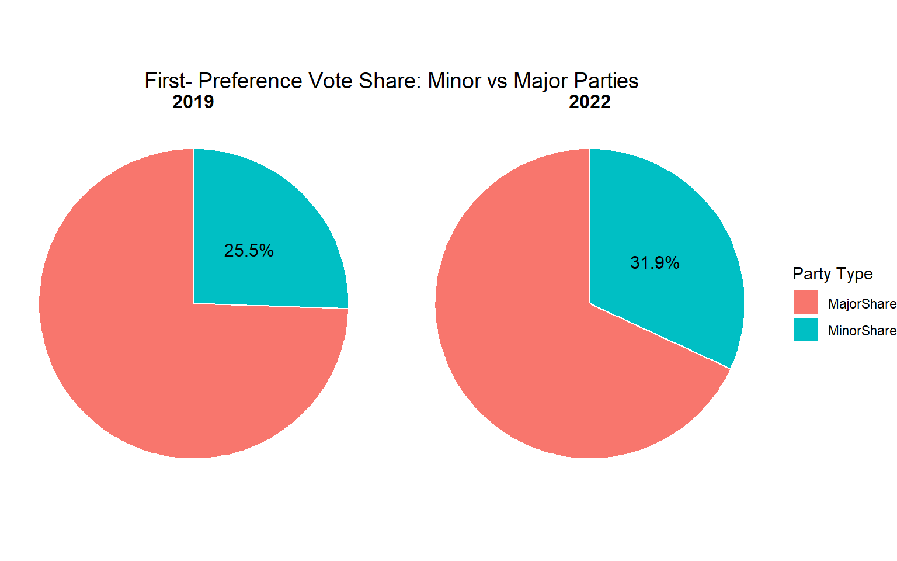
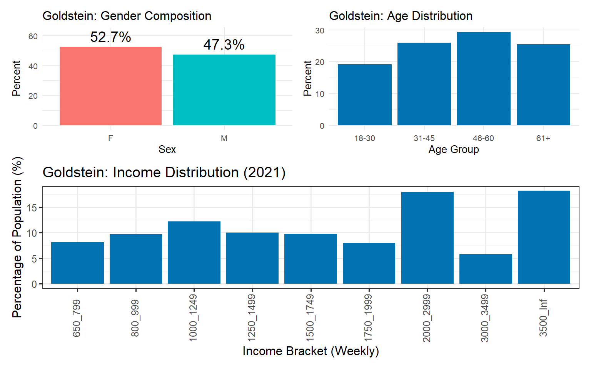
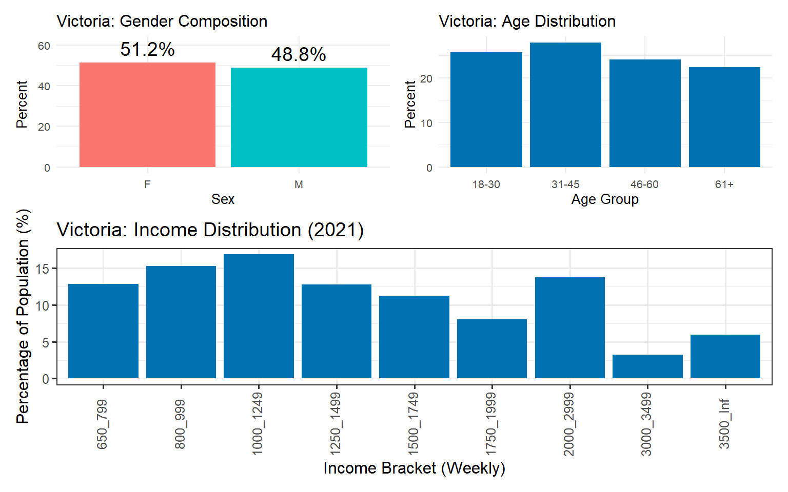
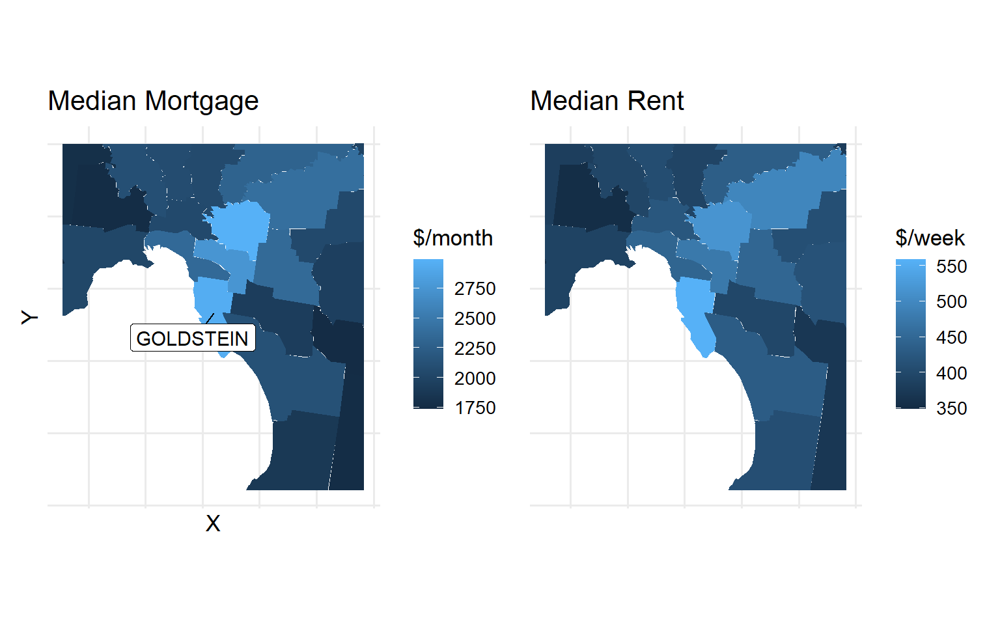

# Load 2019 data (skipping metadata row)
e_2019 <- read_csv("https://results.aec.gov.au/24310/Website/Downloads/HouseDopByDivisionDownload-24310.csv", skip = 1, show_col_types = FALSE) |>
mutate(ElectionYear = 2019)
# Load 2022 data (skipping metadata row)
e_2022 <- read_csv("https://results.aec.gov.au/27966/Website/Downloads/HouseDopByDivisionDownload-27966.csv", skip = 1, show_col_types = FALSE) |>
mutate(ElectionYear = 2022)
# Combine the two datasets
combined_election <- bind_rows(e_2019, e_2022)National Election Analytics
Australian Federal Elections 2019 & 2022
Task 1
i) Download and combine
ii) Lost, held or new electoral wins by independents
# Filter and group to show the winners in 2022
winners <- combined_election |>
filter(Elected == "Y") |>
select(DivisionNm, PartyNm, ElectionYear) |>
group_by(DivisionNm, ElectionYear) |>
slice(1) |>
ungroup()
# Reshape to wide format
winners_wide <- winners |>
pivot_wider(names_from = ElectionYear, values_from = PartyNm, names_prefix = "Party")
# Classify divisions
classified_divisions <- winners_wide |>
mutate(IndependentStatus = case_when(
Party2019 == "Independent" & Party2022 == "Independent" ~ "Held",
Party2019 != "Independent" & Party2022 == "Independent" ~ "New Electoral Wins",
Party2019 == "Independent" & Party2022 != "Independent" ~ "Lost",
TRUE ~ "Lost"
))
# Exclude redistributed seats
final_classification <- classified_divisions |>
filter(!DivisionNm %in% c("Stirling", "Hawke"))
print(final_classification)# A tibble: 150 × 4
DivisionNm Party2019 Party2022 IndependentStatus
<chr> <chr> <chr> <chr>
1 Adelaide Australian Labor Party Australian Labor Party Lost
2 Aston Liberal Liberal Lost
3 Ballarat Australian Labor Party Australian Labor Party Lost
4 Banks Liberal Liberal Lost
5 Barker Liberal Liberal Lost
6 Barton Labor Labor Lost
7 Bass Liberal Liberal Lost
8 Bean Australian Labor Party Australian Labor Party Lost
9 Bendigo Australian Labor Party Australian Labor Party Lost
10 Bennelong Liberal Labor Lost
# ℹ 140 more rowsiii) Parties who held independent seats won in 2022
# Filter parties who lost to Independents in 2022
parties_lost_to_independents <- winners_wide |>
filter(Party2022 == "Independent", Party2019 != "Independent") |>
count(Party2019, sort = TRUE, name = "Seats lost in 2022")
knitr::kable(parties_lost_to_independents, captions = "Seats lost to independents in 2022")| Party2019 | Seats lost in 2022 |
|---|---|
| Liberal | 6 |
| Labor | 1 |
iv) Filter for voter preference for minor parties
- Exclude candidates representing Labour or the Coalition
# For consistency exclude electorates which have been redistributed
first_round_votes <- combined_election |>
filter(CountNumber == 0,
CalculationType == "Preference Count",
!DivisionNm %in% c("Stirling", "Hawke"))# Exclude major parties vote count
first_round_minor <- combined_election |>
filter(
CountNumber == 0,
CalculationType == "Preference Count",
!DivisionNm %in% c("Stirling", "Hawke"),
!PartyAb %in% c("ALP", "LP", "LNP", "NP", "NAT")
)Pros and cons of raw counts and (%)
Raw voter count reflects the actual number of voters showing their popularity in absolute terms. However, it may be difficult to compare trends between electorates using voter count. For instance, electoral size plays a key role when comparing results, using raw voter count can sometimes be misleading. For example in 2022, Luke Gosling with 32,726 votes won the seat in Solomon, whereas Allison Bluck lost the battle in Mayo even after gaining 43,854 votes.
Using percentage can be useful in many ways to compare the electorate results because data is standardized and shown as a proportion. However, it may not be ideal to use percentage data to do further calculations/analysis.
v) New variable - Vote Change
- Assumption: For both elections same number of minor party candidates are running in each division
# Change in minor/independent first preference votes also excluding redistributed divisions
vote_change_minor <- first_round_minor |>
filter(!DivisionNm %in% c("Stirling", "Hawke")) |>
group_by(DivisionNm, ElectionYear) |>
summarise(TotalVotes = sum(CalculationValue, na.rm = TRUE), .groups = "drop") |>
pivot_wider(
names_from = ElectionYear,
values_from = TotalVotes,
names_prefix = "Votes"
) |>
mutate(VoteChange = Votes2022 - Votes2019)vi) Visualization of change in preference votes
Graph showing each Divisions vote change
ggplot(vote_change_minor, aes(x = reorder(DivisionNm, VoteChange), y = VoteChange, fill = VoteChange)) +
geom_col(show.legend = FALSE) +
coord_flip() +
scale_fill_gradient2(low = "red", mid = "white", high = "green", midpoint = 0) +
labs(
title = "Change in First Preference Votes (Minor/Independent) from 2019 to 2022",
x = "Electoral Division",
y = "Vote Change"
) +
theme_minimal() +
theme(axis.text.y = element_blank()) 
Pie chart showing votes away from major parties
# Filter redistributed seats
first_round_minor_filtered <- first_round_minor |>
filter(!DivisionNm %in% c("Stirling", "Hawke"))
# Total votes per division
total_all <- first_round_votes |>
group_by(DivisionNm, ElectionYear) |>
summarise(TotalVotes_All = sum(CalculationValue, na.rm = TRUE), .groups = "drop")
total_minor <- first_round_minor_filtered |>
group_by(DivisionNm, ElectionYear) |>
summarise(TotalVotes_Minor = sum(CalculationValue, na.rm = TRUE), .groups = "drop")
# Join using division names and ignore na's
vote_totals <- left_join(total_all, total_minor, by = c("DivisionNm", "ElectionYear")) |>
mutate(
TotalVotes_Minor = replace_na(TotalVotes_Minor, 0),
TotalVotes_Major = TotalVotes_All - TotalVotes_Minor)
# Calculate the actual %
vote_share_percent <- vote_totals |>
group_by(ElectionYear) |>
summarise(
Minor = sum(TotalVotes_Minor, na.rm = TRUE),
Major = sum(TotalVotes_Major, na.rm = TRUE),
Total = sum(TotalVotes_All, na.rm = TRUE),
.groups = "drop"
) |>
mutate(
MinorShare = Minor / Total,
MajorShare = Major / Total
) |>
select(ElectionYear, MinorShare, MajorShare) |>
pivot_longer(cols = c(MinorShare, MajorShare), names_to = "Type", values_to = "Share")ggplot(vote_share_percent, aes(x = 1, y = Share, fill = Type)) +
geom_col(width = 1, color = "white") +
geom_text(data = vote_share_percent |> filter(Type == "MinorShare"),
aes(label = scales::percent(Share, accuracy = 0.1)),
position = position_stack(vjust = 0.5),
color = "black", size = 4) +
coord_polar("y") +
xlim(0.5, 1.5) + # Sets the "hole" size
facet_wrap(~ElectionYear) +
labs(
title = "First- Preference Vote Share: Minor vs Major Parties",
fill = "Party Type"
) +
theme_void() +
theme(
strip.text = element_text(face = "bold", size = 12),
plot.title = element_text(hjust = 0.5, size = 14)
)
Results
- The growth in votes for minor parties is very evident from Figure 2 and Figure 1 assuming the number of candidates represented by all parties remained same. However, it isn’t the case all the time, therefore, to get the real growth in minor party vote counts we could scrutinize each division, for example check if any major party decided not to run an electorate in 2022 which they previously ran for in 2019.
vii) Demographics
In Table 1 we look into areas which had the highest increase (positive impact) in preference counts for minor parties including independents
In Table 2 we look into areas which had the highest decrease (negative impact) in preference counts for minor parties including independents
For the ease of interpretation we will consider Inner and Outer Metropolitan areas one area ‘Metropolitan’
# Load and clean the classification data set from AEC
electorate_classification <- read_excel("data/electorate_classification.xlsx", skip = 3) |>
rename(
DivisionNm = `Electoral division`,
Demographic = `Demographic classification`,
State = `State or territory`
) |>
filter(!is.na(DivisionNm), !is.na(Demographic))
# Join with our data
vote_change_with_demo <- vote_change_minor |>
left_join(
electorate_classification |> select(DivisionNm, Demographic, State),
by = "DivisionNm")top_vote_increases <- vote_change_with_demo |>
arrange(desc(VoteChange))# Top 10 positive changes (minors only)
top_10 <- vote_change_with_demo |>
arrange(desc(VoteChange)) |>
slice_head(n = 10) |>
select(DivisionNm, Demographic, State)
# Bottom 10 (most negative changes)
bottom_10 <- vote_change_with_demo |>
arrange(VoteChange) |>
slice_head(n = 10) |>
select(DivisionNm, Demographic, State)knitr::kable(top_10, caption = "Top divisions with positive vote change for minor parties")| DivisionNm | Demographic | State |
|---|---|---|
| Goldstein | Inner Metropolitan | Victoria |
| Fowler | Outer Metropolitan | New South Wales |
| Curtin | Inner Metropolitan | Western Australia |
| Mackellar | Outer Metropolitan | New South Wales |
| Bradfield | Inner Metropolitan | New South Wales |
| Kooyong | Inner Metropolitan | Victoria |
| Hume | Provincial | New South Wales |
| Hughes | Outer Metropolitan | New South Wales |
| North Sydney | Inner Metropolitan | New South Wales |
| Richmond | Rural | New South Wales |
knitr::kable(bottom_10, caption = "Top divisions with negative vote change for minor parties")| DivisionNm | Demographic | State |
|---|---|---|
| Herbert | Provincial | Queensland |
| Farrer | Rural | New South Wales |
| New England | Rural | New South Wales |
| Hunter | Rural | New South Wales |
| Dawson | Rural | Queensland |
| Flynn | Rural | Queensland |
| Paterson | Provincial | New South Wales |
| Capricornia | Provincial | Queensland |
| Blair | Provincial | Queensland |
| Mallee | Rural | Victoria |
demographic_distribution <- top_10 |>
count(Demographic, sort = TRUE)
knitr::kable(demographic_distribution, caption = "Areas which had positive vote change")| Demographic | n |
|---|---|
| Inner Metropolitan | 5 |
| Outer Metropolitan | 3 |
| Provincial | 1 |
| Rural | 1 |
demographic_distribution_2 <- bottom_10 |>
count(Demographic, sort = TRUE)
knitr::kable(demographic_distribution_2, caption = "Areas which had negative vote change")| Demographic | n |
|---|---|
| Rural | 6 |
| Provincial | 4 |
Analysis
- Metropolitan areas are where minor parties performed well as shown in Table 3. Eight of the ten divisions with the largest increases in first preference votes were located in metropolitan areas
- Rural areas are where minor parties did not do so well as shown in Table 4. Except for Bean all the divisions which had a negative change were rural/provincial areas
new_wins_full <- classified_divisions |>
filter(IndependentStatus == "New Electoral Wins") |>
left_join(
combined_election |>
filter(ElectionYear == 2022, Elected == "Y", PartyNm == "Independent") |>
select(DivisionNm, Surname, GivenNm, PartyNm),
by = "DivisionNm"
) |>
left_join(
electorate_classification |> select(DivisionNm, Demographic),
by = "DivisionNm"
) |>
select(DivisionNm, GivenNm, Surname, PartyNm, Party2019, Demographic) |>
distinct()knitr::kable(new_wins_full, caption = "New winners: Areas flipped by independents")| DivisionNm | GivenNm | Surname | PartyNm | Party2019 | Demographic |
|---|---|---|---|---|---|
| Curtin | Kate | CHANEY | Independent | Liberal | Inner Metropolitan |
| Fowler | Dai | LE | Independent | Labor | Outer Metropolitan |
| Goldstein | Zoe | DANIEL | Independent | Liberal | Inner Metropolitan |
| Kooyong | Monique | RYAN | Independent | Liberal | Inner Metropolitan |
| Mackellar | Sophie | SCAMPS | Independent | Liberal | Outer Metropolitan |
| North Sydney | Kylea Jane | TINK | Independent | Liberal | Inner Metropolitan |
| Wentworth | Allegra | SPENDER | Independent | Liberal | Inner Metropolitan |
viii) Summary
Independents and minor parties are increasingly becoming popular among the voters. The minors (including independents) have secured a staggering 32% of first-preference votes in 2022 which is a significant increase from the previous election as shown in Figure 2.
Independents have won more seats. The independent candidates did not only secure more first-preferencial votes, they have won 3 times as many seats in 2022; 3 won in 2019 vs. 10 won in 2022. However, 7 out of the 10 independent winners are considered Teals Wahlquist, 2022 - could we potentially see a Teal bloc in parliament over the coming years?
All of the independent MPs from 2019; Helen Haines, Zali Steggall and Andrew Wilkie held their seats in 2022. Voters have shown faith to re-elect their independent candidates which demonstrates the growing amount of trust and reliance.
Right leaning voter who previously chose Liberal candidates have begun diverting to independent candidates. Recent polls for 2025 elections show independents are gaining popularity in Coalition bases Seccombe, 2025. This is in-line with our findings in Table 5 where independents flipped most of their seats previously held by Liberals.
Voters in metropolitan areas are more likely to elect an independent candidate compared to voters in rural/provincial areas which are dominated by major parties. Moreover, an independent candidate has higher chances of winning in metropolitan areas, evidenced by the fact that all seats won by independents in 2022, except Indi, were in metropolitan areas.
Task 2
i) Age, income and gender distribution G17 and G04
The electorate picked for analysis is Goldstein, located in south-west Melbourne. The current MP in this division is independent candidate Zoe Daniel
Only income data is sourced from G17C. Data on Gender and Age is sourced separately from G04A and G04B
For this analysis citizens under 18s are filtered out because anyone under this age group is not considered a voter
Please note- for ease of comparison, all plotting are displayed at the bottom of this section using patchwork
# Income data by SA1
g17 <- read_csv(
here("data", "2021_GCP_all_for_VIC_short-header",
"2021 Census GCP All Geographies for VIC", "SA1", "VIC", "2021Census_G17C_VIC_SA1.csv"),
show_col_types = FALSE
)
# Age and gender by SA1
g04a <- read_csv(
here("data", "2021_GCP_all_for_VIC_short-header",
"2021 Census GCP All Geographies for VIC", "SA1", "VIC", "2021Census_G04A_VIC_SA1.csv"),
show_col_types = FALSE
)
g04b <- read_csv(
here("data", "2021_GCP_all_for_VIC_short-header",
"2021 Census GCP All Geographies for VIC", "SA1", "VIC", "2021Census_G04B_VIC_SA1.csv"),
show_col_types = FALSE
)
# SA1 boundaries
sa1_map <- read_sf(here("data", "Geopackage_2021_G04_VIC_GDA2020", "G04A_VIC_GDA2020.gpkg"),
layer = "G04A_SA1_2021_VIC") |>
st_transform(7844)
# AEC divisions
aec_map <- read_sf(here("data", "vic-july-2021-esri", "E_VIC21_region.shp")) |>
st_transform(7844)Centroid Intersection
The census and electoral data are matched through the process of creating centroids. Intersection points are identified through the 11-digit common variable ‘SA1_CODE_2021’. Centroids which are polygons in the mid-point of an SA1 area are then combined to form an electoral division, here the function st_intersection is used.
# Get centroid intersections
sa1_map_centroid <- sa1_map |> mutate(centroid = st_centroid(geom))
intersects <- st_intersects(sa1_map_centroid$centroid, aec_map$geometry, sparse = FALSE)
arr_ind <- which(intersects, arr.ind = TRUE)
# Match SA1 to divisions
sa1_division_map <- tibble(
SA1_CODE_2021 = sa1_map$SA1_CODE_2021[arr_ind[, 1]],
DivisionNm = aec_map$Elect_div[arr_ind[, 2]]
)
# Filter for Goldstein
goldstein_sa1s <- sa1_division_map |>
filter(DivisionNm == "Goldstein") |>
pull(SA1_CODE_2021)g04_combined_raw <- bind_rows(g04a, g04b)
# Filter and create a range to distribute frequency
# Using data after age 18
g04_summary <- g04_combined_raw |>
pivot_longer(cols = starts_with("Age_yr_"), names_to = "age_label", values_to = "count") |>
extract(age_label, into = c("age", "sex"), regex = "Age_yr_(.*?)_([MFP])") |>
mutate(age_start = as.numeric(str_extract(age, "^\\d+"))) |>
filter(!is.na(age_start), age_start >= 18) |>
mutate(age_group = case_when(
age_start <= 30 ~ "18-30",
age_start <= 45 ~ "31-45",
age_start <= 60 ~ "46-60",
TRUE ~ "61+"
)) |>
group_by(SA1_CODE_2021, sex, age_group) |>
summarise(count = sum(count, na.rm = TRUE), .groups = "drop")
g04_goldstein_summary <- g04_summary |>
filter(SA1_CODE_2021 %in% goldstein_sa1s)sex_summary_percent <- g04_goldstein_summary |>
filter(sex %in% c("M", "F")) |>
group_by(sex) |>
summarise(count = sum(count, na.rm = TRUE)) |>
mutate(percent = count / sum(count) * 100)goldstein_gender_plot <- ggplot(sex_summary_percent, aes(x = sex, y = percent, fill = sex)) +
geom_col(show.legend = FALSE) +
geom_text(aes(label = paste0(round(percent, 1), "%")), vjust = -0.5, size = 5) +
labs(title = "Goldstein: Gender Composition", x = "Sex", y = "Percent") +
ylim(0, max(sex_summary_percent$percent) + 10) +
theme_minimal(base_size = 10)# Convert data into a readable table
tbl_G17 <- g17 |>
pivot_longer(cols = -1, names_to = "category",
values_to = "count")
# Filtering the summaries and converting variables into readable text using str_replace
tbl_G17_long <- tbl_G17 |>
filter(!str_detect(string = category, pattern = "Tot"),
!str_detect(category, "PI_NS")) |>
mutate(
category = str_replace(category, "Neg_Nil_income", "-Inf_0"),
category = str_replace(category, "Neg_Nil_incme", "-Inf_0"),
category = str_replace(category, "Negtve_Nil_incme", "-Inf_0"),
category = str_replace(category, "more", "Inf"),
category = str_replace(category, "85ov", "85_110_yrs"),
category = str_replace(category, "85_yrs_ovr", "85_110_yrs"))
# Creating columns for upper and lower values
tbl_G17_tidy <- tbl_G17_long |>
mutate(category = str_remove(category, "_yrs")) |>
separate_wider_delim(cols = category, delim = "_",
names = c("sex", "income_min", "income_max", "age_min", "age_max")) |>
unite("income", c(income_min, income_max), remove = FALSE) |>
unite("age", c(age_min, age_max), remove = FALSE)
tbl_G17_tidy_SA1 = tbl_G17_tidyg04_goldstein_age_percent <- g04_goldstein_summary |>
filter(sex == "P") |>
mutate(percent = count / sum(count, na.rm = TRUE) * 100)goldstein_age_plot <- ggplot(g04_goldstein_age_percent, aes(x = age_group, y = percent)) +
geom_col(fill = "#0072B2") +
labs(title = "Goldstein: Age Distribution", x = "Age Group", y = "Percent") +
theme_minimal(base_size = 10)# Defining income levels in a logical order
income_levels <- c(
"-Inf_0", "0_149", "150_299", "300_399", "400_499", "500_649",
"650_799", "800_999", "1000_1249", "1250_1499", "1500_1749",
"1750_1999", "2000_2999", "3000_3499", "3500_Inf"
)
# Match SA1 codes for Goldstein
g17_goldstein <- tbl_G17_tidy_SA1 |>
filter(SA1_CODE_2021 %in% goldstein_sa1s)# Plot income distribution with clean filtering
goldstein_income_plot <- g17_goldstein |>
filter(income %in% income_levels) |>
group_by(income) |>
summarise(count = sum(count, na.rm = TRUE)) |>
mutate(
income = factor(income, levels = income_levels),
percent = 100 * count / sum(count)
) |>
ggplot() +
geom_col(aes(x = income, y = percent), fill = "#0072B2") +
ggtitle("Goldstein: Income Distribution (2021)") +
ylab("Percentage of Population (%)") +
xlab("Income Bracket (Weekly)") +
theme_bw(base_size = 12) +
theme(axis.text.x = element_text(angle = 90, vjust = 0.3))(goldstein_gender_plot | goldstein_age_plot) / goldstein_income_plot
STE
# Load gender/age (G04) and income (G17) datasets for VIC (STE level)
ste_g04a <- read_csv(here("data", "2021_GCP_all_for_VIC_short-header",
"2021 Census GCP All Geographies for VIC", "STE", "VIC",
"2021Census_G04A_VIC_STE.csv"),
show_col_types = FALSE)
ste_g04b <- read_csv(here("data", "2021_GCP_all_for_VIC_short-header",
"2021 Census GCP All Geographies for VIC", "STE", "VIC",
"2021Census_G04B_VIC_STE.csv"),
show_col_types = FALSE)
ste_g17 <- read_csv(here("data", "2021_GCP_all_for_VIC_short-header",
"2021 Census GCP All Geographies for VIC", "STE", "VIC",
"2021Census_G17C_VIC_STE.csv"),
show_col_types = FALSE)
# Combine G04A and G04B
ste_g04_combined_raw <- bind_rows(ste_g04a, ste_g04b)ste_g04_summary <- ste_g04_combined_raw |>
pivot_longer(cols = starts_with("Age_yr_"), names_to = "age_label", values_to = "count") |>
extract(age_label, into = c("age", "sex"), regex = "Age_yr_(.*?)_([MFP])") |>
mutate(age_start = as.numeric(str_extract(age, "^\\d+"))) |>
filter(!is.na(age_start), age_start >= 18) |>
mutate(age_group = case_when(
age_start <= 30 ~ "18-30",
age_start <= 45 ~ "31-45",
age_start <= 60 ~ "46-60",
TRUE ~ "61+"
)) |>
group_by(STE_CODE_2021, sex, age_group) |>
summarise(count = sum(count, na.rm = TRUE), .groups = "drop")# Tidy and format income distribution
ste_tbl_G17_tidy <- ste_g17 |>
pivot_longer(cols = -1, names_to = "category", values_to = "count") |>
filter(!str_detect(category, "Tot"), !str_detect(category, "PI_NS")) |>
mutate(
category = str_replace_all(category, c(
"Neg_Nil_income|Neg_Nil_incme|Negtve_Nil_incme" = "-Inf_0",
"more" = "Inf",
"85ov|85_yrs_ovr" = "85_110_yrs"
)),
category = str_remove(category, "_yrs")
) |>
separate_wider_delim(category, delim = "_",
names = c("sex", "income_min", "income_max", "age_min", "age_max")) |>
unite("income", c(income_min, income_max), remove = FALSE) |>
unite("age", c(age_min, age_max), remove = FALSE)
ste_g17_neat <- ste_tbl_G17_tidyste_sex_summary_percent <- ste_g04_summary |>
filter(sex %in% c("M", "F")) |>
group_by(sex) |>
summarise(count = sum(count, na.rm = TRUE)) |>
mutate(percent = count / sum(count) * 100)p1 <- ggplot(ste_sex_summary_percent, aes(x = sex, y = percent, fill = sex)) +
geom_col(show.legend = FALSE) +
geom_text(aes(label = paste0(round(percent, 1), "%")), vjust = -0.5, size = 5) +
labs(
title = "Victoria: Gender Composition",
x = "Sex",
y = "Percent"
) +
ylim(0, max(ste_sex_summary_percent$percent) + 10) +
theme_minimal(base_size = 10)ste_age_percent <- ste_g04_summary |>
filter(sex == "P") |>
mutate(percent = count / sum(count, na.rm = TRUE) * 100)p2 <- ggplot(ste_age_percent, aes(x = age_group, y = percent)) +
geom_col(fill = "#0072B2") +
labs(
title = "Victoria: Age Distribution",
x = "Age Group",
y = "Percent"
) +
theme_minimal(base_size = 10)p3 <- ste_g17_neat |>
filter(income %in% income_levels) |>
group_by(income) |>
summarise(count = sum(count, na.rm = TRUE)) |>
mutate(
total = sum(count),
percent = count / total * 100,
income = factor(income, levels = income_levels)
) |>
ggplot(aes(x = income, y = percent)) +
geom_col(fill = "#0072B2") +
labs(
title = "Victoria: Income Distribution (2021)",
x = "Income Bracket (Weekly)",
y = "Percentage of Population (%)"
) +
theme_bw(base_size = 12) +
theme(axis.text.x = element_text(angle = 90, vjust = 0.3))(p1 | p2) / p3
Results
The gender ratio in Goldstein shown in Figure 3 is consistent with the state results shown in Figure 4.
Results shows Goldstein has fewer younger people (18-30) and a higher portion of elderly persons. However we have to be careful while drawing any conclusion or making a statement, does Goldstein really have fewer young people? Bare in mind the range of distribution is uneven, and also we have left out all children and infants under the age of 18 in our analysis.
Figure 3 shows that a large portion of people in Goldstein fall within the top income bracket ($3500 and above per week). This result supersedes the state figures shown in Figure 4 by a significant margin.
ii) G02
For analysis we will look into median mortgage repayment and median rent data from the 2021 census. The variables are aggregated from SA1 areas and illustrated in the maps based on electoral divisions.
The chosen variables estimate how much a private homeowner or tenant spends on mortgage/rent. In the upcoming election, housing is a major topic Ipsos, 2024, and since it is being addressed by all politicians, I believe it is important to understand how much it costs the average voter to afford a home.
The map projections are displayed by matching the census and electoral data from two different sources. Centroids are created in the mid-point of a SA1 region, then st_intersect is used to filter out areas which overlap a given electoral division.
One could argue that a drawback for using this method is that centroids in the border of a region may manipulate actual results.
# Load G02 data (SA1 level)
g02_data <- read_sf(
here("data", "Geopackage_2021_G02_VIC_GDA2020", "G02_VIC_GDA2020.gpkg"),
layer = "G02_SA1_2021_VIC"
) |>
st_transform(7844)
vic_map_path <- "data/vic-july-2021-esri/E_VIC21_region.shp"
vic_election_map <- read_sf(here(vic_map_path)) |>
mutate(DivisionNm = toupper(Elect_div)) |>
st_simplify(dTolerance = 100) |>
st_transform(7844)# Create centroids
g02_data_centroid <- g02_data |>
mutate(centroid = st_centroid(geom))
# Match centroids using st_intersect
intersection_matrix <- st_intersects(g02_data_centroid$centroid, vic_election_map$geometry, sparse = FALSE)
arr_ind <- which(intersection_matrix == TRUE, arr.ind = TRUE)
# Create SA1-to-Division mapping
sa1_division_map <- tibble(
SA1_NAME_2021 = g02_data$SA1_NAME_2021[arr_ind[, 1]],
DivisionNm = vic_election_map$DivisionNm[arr_ind[, 2]]
)
# Join DivisionNm to original data
g02_with_division <- g02_data |>
right_join(sa1_division_map, by = "SA1_NAME_2021")
# Aggregate by Division
g02_summary <- g02_with_division |>
group_by(DivisionNm) |>
summarise(
mean_mortgage = mean(Median_mortgage_repay_monthly, na.rm = TRUE),
mean_rent = mean(Median_rent_weekly, na.rm = TRUE)
) |>
ungroup()
# Drop geometry from g02_summary before joining
g02_summary_nogeom <- g02_summary |> st_drop_geometry()
# Join electoral maps
g02_map_joined <- left_join(vic_election_map, g02_summary_nogeom, by = "DivisionNm")
# 9. Crop into Goldstein
goldstein_geom <- g02_map_joined |> filter(DivisionNm == "GOLDSTEIN") |> st_geometry()
zoomed_map <- st_crop(g02_map_joined, st_bbox(st_buffer(goldstein_geom, dist = 20000)))
# Label to identify Goldstein
goldstein_label <- zoomed_map |>
filter(DivisionNm == "GOLDSTEIN") |>
mutate(label_point = st_centroid(geometry))
# Create a centroids data frame for labels
label_data <- zoomed_map |>
filter(DivisionNm == "GOLDSTEIN") |>
st_centroid() |>
st_coordinates() |>
as_tibble() |>
mutate(DivisionNm = "GOLDSTEIN")# Plot with Goldstein label (Mortgage Map)
p1 <- ggplot() +
geom_sf(data = zoomed_map, aes(fill = mean_mortgage), color = NA) +
geom_label_repel(
data = label_data, aes(x = X, y = Y, label = DivisionNm),
size = 4, color = "black", fill = "white", box.padding = 0.4, min.segment.length = 0
) +
labs(
title = "Median Mortgage",
fill = "$/month"
) +
theme_minimal(base_size = 13) +
theme(
axis.text.x = element_blank(),
axis.text.y = element_blank(),
axis.ticks = element_blank()
)# Plot
p2 <- ggplot() +
geom_sf(data = zoomed_map, aes(fill = mean_rent), color = NA) +
labs(
title = "Median Rent",
fill = "$/week"
) +
theme_minimal(base_size = 13) +
theme(
axis.text.x = element_blank(),
axis.text.y = element_blank(),
axis.ticks = element_blank()
)# Display side-by-side
p1 + p2
Results
The maps show Goldstein residents spend more on housing relative to other divisions. The results are in-line with past results where we have found people in Goldstein have a higher income compared to the state average.
We also found that a larger proportion of the population are senior citizens; stemming from this, one could draw a hypothesis about a positive correlation between age and spending. Meaning - are older people likely to spend higher on housing? Or people in Goldstein are just rich? One must not forget the implications of ecological fallacy here!
iii) Representative sample
Goldstein is an electorate which includes Melbourne’s most affluent suburbs like Hampton, Brighton and Sandringham. Goldstein as a subset of Victoria represents voters who are wealthy, progressive and highly-educated. For example, kangaroos come in different sizes and forms, therefore observing one particular breed of kanagaroo wouldn’t be representative of the population and won’t show reliable findings during analysis.
| Demographic Distribution | Goldstein | Victoria | Representative of population? |
|---|---|---|---|
| Gender | Approx. 50/50 | Approx. 50/50 | Yes |
| Age | Fewer in 18–30 range, more in 61+ group | A balanced age distribution | No |
| Income | High concentration in top bracket ($3500+/week) | A more even/flat distribution | No |
In statistical terms, the sample (Goldstein) does not represent the broader population (Victoria). If conclusions about voting preferences were drawn using Goldstein division, then the calculations would suffer from sampling bias. A division that has data more aligned with Victoria and results that are less skewed, would be more ideal for analysis.
Citations
Ipsos (2024). The Ipsos Issues Monitor. online Ipsos. Available at: https://www.ipsos.com/en-au/issuesmonitor.
Müller K (2020). _ here: A Simpler Way to Find Your Files_. R package version 1.0.1
Pebesma, E., & Bivand, R. (2023). Spatial Data Science: With Applications in R. Chapman and Hall/CRC.
Pedersen T (2024). patchwork: The Composer of Plots_. R package version 1.3.0, https://CRAN.R-project.org/package=patchwork.
Seccombe, M. (2025). Polling shows teals support is growing in Coalition base. online The Saturday Paper. Available at: https://www.thesaturdaypaper.com.au/news/politics/2025/03/22/polling-shows-teals-support-growing-coalition-base.
Slowikowski K (2024). ggrepel: Automatically Position Non-Overlapping Text Labels with ‘ggplot2’. R package version 0.9.6, https://CRAN.R-project.org/package=ggrepel.
Wahlquist, C. (2022). Teal independents: who are they and how did they upend Australia’s election? online the Guardian. Available at: https://www.theguardian.com/australia-news/2022/may/23/teal-independents-who-are-they-how-did-they-upend-australia-election.
Wickham H (2023). forcats: Tools for Working with Categorical Variables (Factors). R package version 1.0.0, https://CRAN.R-project.org/package=forcats.
H. Wickham. ggplot2: Elegant Graphics for Data Analysis. Springer-Verlag New York, 2016.
Wickham H, Averick M, Bryan J, Chang W, McGowan LD, François R, Grolemund G, Hayes A, Henry L, Hester J, Kuhn M, Pedersen TL, Miller E, Bache SM, Müller K, Ooms J, Robinson D, Seidel DP, Spinu V, Takahashi K, Vaughan D, Wilke C, Woo K, Yutani H (2019).
Wickham H, Bryan J (2025).
Wickham H, François R, Henry L, Müller K, Vaughan D (2023). dplyr: A Grammar of Data Manipulation. R package version 1.1.4, https://CRAN.R-project.org/package=dplyr.
Wickham H, Pedersen T, Seidel D (2023). scales: Scale Functions for Visualization. R package version 1.3.0, https://CRAN.R-project.org/package=scales.
AI acknowledgment
I acknowledge the use of LLM in aiding this project by helping me find the correct codes for analysis/processing. Here is the link.